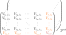

Hypernetted Chain
The calculation of the ion-ion static structure using hypernetted chain (HNC) calculations can provide good agreement with more costly techniques if adequate potentials are chosen [Fletcher et al., 2015, Wünsch et al., 2009].
It allows for obtaining pair distribution functions \(g_{ab} = 1 + h_{ab}\) by iteratively solving the Ornstein Zernike equation of a classical liquid, splitting it into a direct correlation function \(c_{\text{ab}}\) and an indirect term.
and closing it with the HNC approximation, where \(V_\text{ab}\) are the potentials between particles \(a\) and \(b\).
Structure factors can the be calculated via
Our implementation is based on the work of Kathrin Wünsch [Wünsch, 2011]. See especially the flowchart in Figure 4.1 therein, and also [Schumacher et al., 2025] and [Shaffer et al., 2017].
Within the HNC modules, all quantities have three axis with \((n\times n \times m)\) entries, where \(n\) is the number of ion species considered and \(m\) is the number of \(r\) or \(k\) points considered.
{kind=link}

The HNC approach is capable of incorporating electrons, natively, by adding it
as an additional ion species. This is normally achieved by setting
jaxrts.hnc_potentials.HNCPotential.include_electrons to
"SpinAverged".
This adds one additional entry to the first two dimensions (see figure above).
If a user requires to separate two kinds of electrons for their different
spins, set jaxrts.hnc_potentials.HNCPotential.include_electrons to
"SpinSeparated". This will introduce two additional entries, instead, with
half of the electron density for each of them.